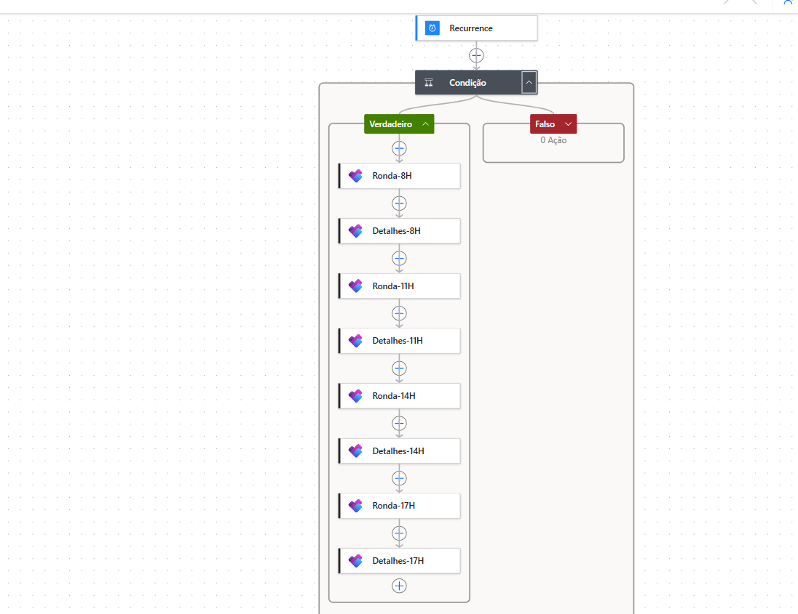
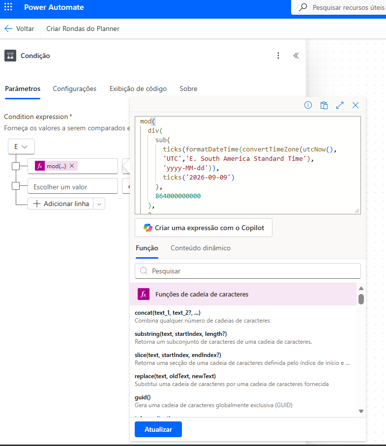
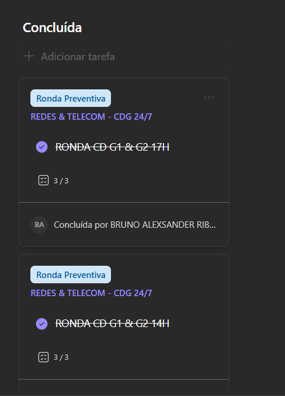

Escala 12x36
A data atual é comparada com uma data-base e a paridade dos dias determina se o fluxo deve prosseguir.
CASE · POWER AUTOMATE
Automação criada para transformar uma rotina operacional recorrente em um fluxo programado no Microsoft Planner, respeitando uma escala 12x36 e reduzindo a criação manual de tarefas.
O PROBLEMA
As tarefas precisam ser criadas somente nos dias pertencentes à escala 12x36. Uma recorrência diária simples não resolve o problema: o fluxo precisa determinar se a data atual pertence ou não ao ciclo operacional antes de criar as tarefas no Planner.
A data atual é comparada com uma data-base e a paridade dos dias determina se o fluxo deve prosseguir.
Nos dias válidos, as tarefas operacionais são criadas automaticamente nos horários definidos pelo fluxo.
As tarefas são direcionadas ao responsável configurado no ambiente do Microsoft Planner.
Após a criação, o fluxo complementa cada tarefa com descrição e verificações padronizadas.
A lógica considera o horário local antes de calcular o dia da escala e as datas operacionais.
O case documenta a solução sem publicar IDs, contas ou identificadores do ambiente corporativo original.
LÓGICA
O fluxo inicia por recorrência, normaliza a data para o fuso local e calcula quantos dias se passaram desde uma data-base. A operação módulo 2 identifica a paridade do dia: somente o ramo correspondente à escala executa a criação das tarefas.
REGISTROS DO PROJETO
Os registros abaixo documentam a implementação no Power Automate e o resultado entregue no Microsoft Planner: estrutura completa do fluxo, condição matemática da escala 12x36, tarefas efetivamente geradas e os detalhes/checklist aplicados automaticamente.



CÓDIGO & DOCUMENTAÇÃO
O repositório público contém a arquitetura, a lógica da escala, instruções de configuração, orientações de segurança e um exemplo sanitizado do fluxo. O export corporativo original não é publicado para preservar identificadores do ambiente Microsoft 365.